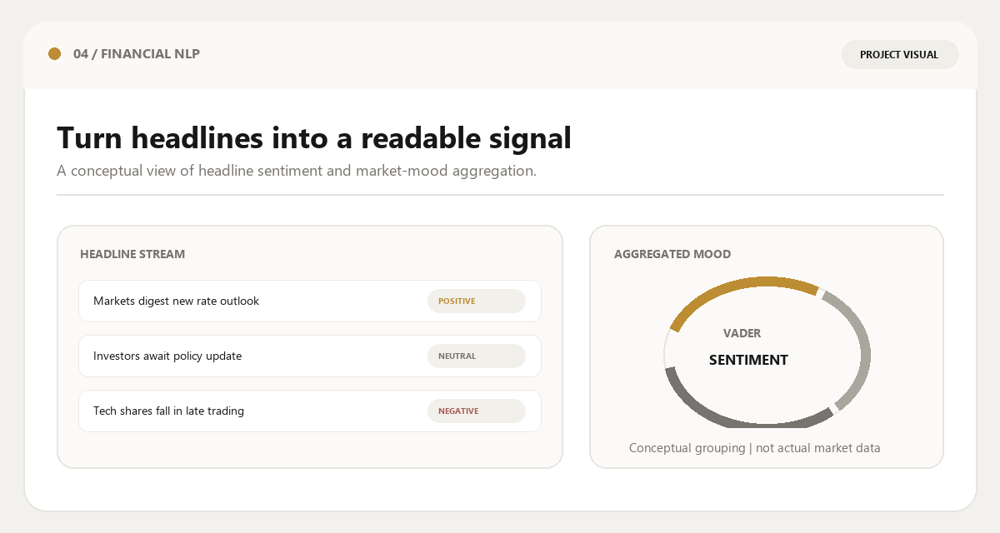

RSS / Atom Feeds
Live headlines from CoinDesk, CoinTelegraph and Yahoo Finance form the continuous input stream.
A real-time financial news platform that aggregates live RSS and Atom feeds, scores sentiment with VADER, classifies narratives, and presents an interactive market-mood view through a Streamlit dashboard.
Reading every update manually makes it difficult to identify the broader tone of the news stream and separate useful signals from continuous information noise. Important narratives are buried inside volume.
This project was built to collect current financial headlines, score their sentiment, group them into meaningful categories and aggregate the results into a market-mood view that can be interpreted quickly.
The goal is not to predict prices. It is to make the emotional tone of the financial news stream visible, readable and explorable in real time.
Live headlines from CoinDesk, CoinTelegraph and Yahoo Finance form the continuous input stream.
Titles, summaries and metadata are extracted, cleaned and normalised before sentiment scoring.
Headlines are classified into Bitcoin & Major Coins, DeFi, Regulation, NFTs, Technology, Earnings, Macro and related narratives.
No external API keys. No persistent database. Just live RSS/Atom feeds processed at runtime with caching and size limits.
Live financial and crypto headlines enter the pipeline.
Requests + BeautifulSoup extract titles, summaries and links.
Positive, negative, neutral and compound scores are generated.
Market mood, categories, filters and interactive exploration.
Python, Streamlit, Requests, BeautifulSoup, VADER and dateutil keep the system fast and dependency-light.
Size limits, per-source error handling, deduplication and 15-minute caching protect the pipeline from fragile feeds.
Sentiment badges, market-mood aggregation, search, filtering, sorting and CSV export turn raw scores into an explorable interface.

The platform focuses on making the current news environment interpretable rather than claiming predictive power over prices.
Continuous retrieval of financial and crypto headlines from multiple RSS and Atom sources with caching and size limits.
Article-level positive, negative, neutral and compound scores generated in real time with clear thresholds.
Individual scores are aggregated into overall tone, average sentiment and a sentiment distribution chart.
Headlines are organised into Bitcoin, DeFi, Regulation, NFTs, Technology, Earnings, Macro and related narratives.
Search, timeframe, category, sentiment and source filters, plus sorting and CSV export, support rapid inspection of the news stream.
Lexicon-based sentiment can miss financial jargon, sarcasm and headlines whose meaning depends heavily on market context.
External feeds can change structure, rate-limit or disappear, affecting both freshness and parsing reliability.
Sentiment is derived primarily from titles and short summaries. Full article context is not analysed.
The current version focuses on the live stream and does not yet store sentiment over time for trend analysis.
This system describes the emotional tone of the current news stream. It is not financial advice and does not predict market direction.
Expand feed coverage across equities, macro and additional crypto outlets to improve narrative breadth.
Evaluate financial language models as a more context-aware alternative to general-purpose VADER scoring.
Persist scored headlines so market mood can be tracked across days and weeks instead of only the current snapshot.
Add threshold-based alerts, scheduled summaries and richer exportable sentiment reports.
A lightweight sentiment engine becomes useful when its output is aggregated, categorised and presented as an explorable market-mood interface rather than a list of raw scores.
External feeds change the engineering problem from static analysis to continuous freshness and reliability.
A lexicon model can still create value when the interface does the heavy lifting.
Search, filters, mood aggregation and CSV export turn scores into something people can actually use.
No API keys and no database forced a clean, self-contained and unit-tested design.
Live dashboard and source code.